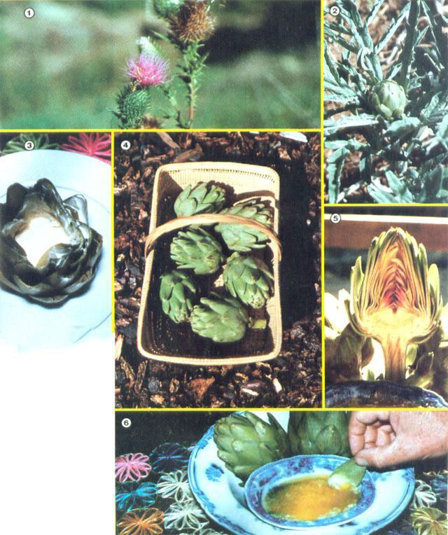

The ""Art"" Of Artichokes
March/April 1979
Want to try something different (and delicious) in your garden this year? Then take a tip from
Juanita Browne, and cultivate...
Though many folks are unfamiliar with artichokes, these plants are among the most beautiful and versatile additions that you could make to your garden. Their decorative gray-green leaves, stately pineapple-shaped heads, and blue-purple, thistlelike flowers are pretty enough to adorn a flower bed or to be mistaken for a piece of fancy shrubbery . . . and there are endless ways to cook 'em!
Artichokes (Cynara scolymus) are usually considered a vegetable, but they're actually an herb of the Compositae family, native to the Caribbean region. The plants were introduced into the United States-in Louisiana and California-by French settlers, Spanish explorers, and Italian immigrants.
Those transplanted herbs found central California particularly to their liking, and-as a result-about 90% of all of America's commercially grown artichokes are found near Castroville, California ... a town that really deserves its title of "Artichoke Capital of the World". The tasty plants thrive in this frost-free region of cool, foggy summers and light, sandy soil . . . but artichokes can be cultivated in other climes, too! I know, because I've grown 'chokes in the dry, hot San Fernando Valley as well as in the foothills of the Sierra Nevada . . . where early and late frosts-and some heavy freezes-are common.
So, if you have rich soil, can protect the plants against freezing, and will mist the leaves to prevent dehydration, chances are that you'll produce a reasonable artichoke crop no matter where you live . . . and, if you do, the harvest will more than make up for your efforts!
WHERE TO GET 'EM
Artichokes can be grown from seed, but this method is "chancy" at best. Although seeds might produce a good plant, they may also yield an herb that has reverted to its thistle heritage . . . because artichokes don't always grow true to variety.
You can avoid this problem entirely, however, if you transplant sections of rootstock (commonly called "stumps"), or use offshoots (sideshoots) taken from the base of an old plant.
And-if you have a choice-rootstock will produce better plants than offshoots will . . . since the stumps provide stored nutrients that immediately force new leaf and root growth. A root section of several inches in diameter and six inches or more in length can-if it's planted after spring frosts are over-give you a small crop of artichokes during the very first year.
The sucker offshoots, however-which should be dug in the spring when they're about 10 inches high-take another year or two to produce. And, even if small buds do appear on these plants the first year, they should be pinched back to build up the artichoke's strength for a more productive second season.
If you can't get rootstock cuttings from a friend or at your local nursery, you can order them from the following sources:
Giant Artichoke, 11241 Merritt Street, Castroville, California 95012 and California Nursery Company, Niles District, Fremont, California 94536. Prices range from $1.25 to $2.50 per root, and you'll want the variety with tender, delicious green globes. (The purple globes have beautiful flowers, but most people don't consider them worth eating.)
HOW TO PLANT 'EM
Artichokes need a sunny location, but-in especially hot, dry areas-the plants will do better if they receive some shade during the hottest part of the day.
‘Chokes also prefer well drained, friable soil that's heavily enriched with compost and manure. Should you have heavy dirt, it's best to break up the subsoil and "lighten" it with ashes, coarse sand, peat, or grit.
After you've prepared the soil, place your plants three to four feet apart, with the stumps six to eight inches deep and the base of the new leafy shoots just above the ground.
You'll generally find that a half dozen plants will provide enough artichokes for a small family. However, a whole row along a fence would make a practical (and attractive) addition to any garden.
HOW TO KEEP 'EM HEALTHY
Be sure to keep weeds away from your new plants to prevent competition for soil nutrients, and-since artichokes like nitrogen-feed them several times a season with a mulch of manure and rich compost. Also, you must water the plants frequently and deeply, and mist the leaves any time they show signs of wilting.
Once an artichoke is established, it'll grow and produce vigorously for four or five years. After that time, however, the plant should be dug up and divided, and its rootstock replanted.
HOW TO HARVEST 'EM
Artichokes grow to a height of three feet or more and spread to about six feet in diameter. In the spring, the plant will begin to send up shoots from its permanent crown. (A young artichoke may produce only one shoot, while older plants might send up a dozen or more.) Each individual shoot then forms a cluster of large rosette leaves, a stalk grows from the center of the leaf cluster, and several buds are formed on the elongated stalk.
These globular buds-which are really immature flower heads-contain the parts of the plant that you eat. When they reach anywhere from two to four inches in diameter (and before the individual bud leaves start to open), they should be harvested. To do this, cut the stem at a point about one-and-a-half inches below the base of the bud. (In the California fog belt, artichokes can be picked from early winter through spring. In most regions, however, the buds will not mature until late spring and early summer.)
After all the buds have been harvested from a stem, it will bend over and the leaves will show signs of dying back. When this happens, cut the stem at its base and keep removing these old bearing stalks throughout the year. New shoots will grow from the base of the old stump, and these will develop their own fruiting canes.
If your area suffers from cold winters, you should cut back all of the foliage in late November and protect the plants' crowns. I cover my artichokes with a deep pile of hay, but-in hard-freeze areas-it may be necessary to invert a box filled with mulch over the crown, and then mound soil two feet deep around and over the box. Then, when all danger of frost is past, just remove the box and the mulch, and start "feeding" the plants with a good dose of compost or manure.
HOW TO COOK 'EM
The tender base of the bud leaves, the fleshy part of the flower base (the heart), and the tender stem are the edible parts of the artichoke. They can be served hot or cold, and they're delicious . . . whether marinated, stuffed, pickled, dipped, sautéed, puréed, souffléed, dried, fried, or "souped". (Check out French and Italian cookbooks for dozens of ways to prepare this versatile herb.)
I like to serve (and eat!) artichokes as a "finger food" . . . dipped in a sauce made of 1 cup of melted butter and 1/4 cup of lemon juice. The succulent buds are delicious when eaten this way, and are no trouble at all to prepare.
First, to get rid of any "creepy crawlies" (such as earwigs or aphids), soak the artichokes in salted ice water for 30 minutes, then rinse them and remove their small, tough, bottom leaves. If you want to be especially elegant, cut off about one inch of the top leaves and trim the tips of the remaining fronds with kitchen shears.
After that, simply place the buds on a steamer rack above an inch or so of boiling water, then cover the pot and let it steam gently for 30-45 minutes ... or until the base of the artichoke can be easily pierced with a fork.
Finally, when the artichokes are done, lift them out of the pot with tongs and turn them upside down to drain. (You may want to save the vitamin-rich water for soup stock, etc.)
HOW TO EAT 'EM
When you first sit down to a platter of steaming artichokes and a tub of butter sauce, don't let "good manners" blind you to plain old common sense . . . because this is one food that just about has to be eaten with the fingers. Just pick off the outer leaves-one by one-and dip their lower, fleshy ends into the sauce. Then, pop the buttery leaf-ends into your mouth, pull 'em between your front teeth to strip off the delicious "meat", and nonchalantly toss aside the leathery upper portions.
When you've eaten most of the outer leaves, you'll reach a "fuzzy" central core. This is called the "choke", and it's just above the most luscious morsel of all . . . the "heart" of the artichoke. All you have to do is lift out-with a sharp knife-and discard the furry center, cut up the heart and stem that remain, dip the pieces In your butter sauce, and enjoy a flavor that'll fulfill your most exotic gourmet desires!
And while you're eating, you'll be glad to know that artichokes are high in vitamins and minerals, and low in calories, (they average between 50 and 60 calories per bud). In fact, these tasty plants are proof positive that not everything enjoyable is-as the old saw says-either illegal, immoral, or fattening!
 [1] Artichokes are close kin to the similarly shaped wild thistle. [2] Although they're usually grown for their edible flowerets ... 'chokes make an attractive addition to any garden. [3] Harvest the flower buds before the leaves start to open. They can be trimmed and filled with your favorite stuffing for a spectacular treat that will charm the most discriminating gourment. [4] Artichokes are just naturally decorative, as well as delicious. [5] The bases of the leaves, the stem, and?especially?the ""heart"" can all be eaten. Check your cookbooks for special recipes... or [6] serve this elegant vegetable (with lemmo-and-butter sauce) as a simple but lickin' good ginger food. |
 |
|